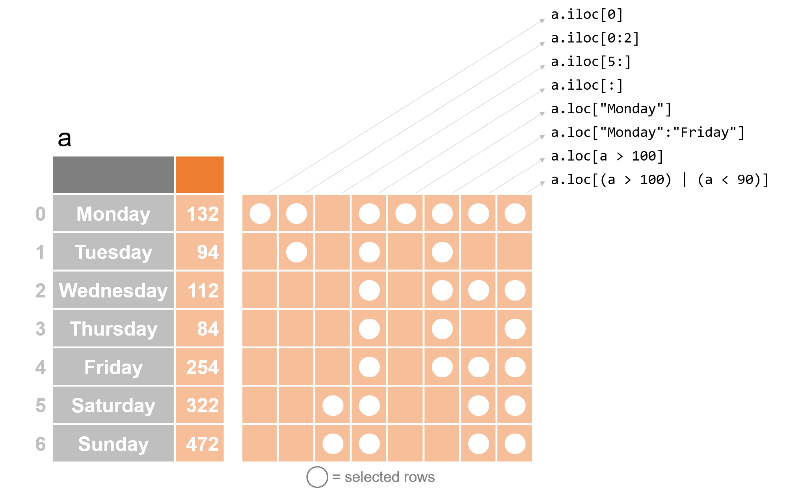

Subsetting and indexing Series¶
Subsetting Series¶
Extracting a subset of elements from a Series is an extremely important task, not least because it generalizes nicely to working with ever-larger datasets (which are at the heart of data science). This process—whether applied to a Series or a dataset—is often referred to as “taking a subset”, “subsetting”, or “filtering”. If there is one skill that is key for enhancing your data science skills quickly, it’s this, because this allows you to get your data into the right format for processing as quickly as possible.
In pandas, there are three ways to filter a Series: using a separate logical Series, using row-number indexing, and using index labels. I tend to use the first method most, but all three are useful. The first and second of these you will recognize from numpy arrays, while the last one (since it uses index labels which only exist in pandas) is unique to pandas.
Subsetting using row-number indexing¶
A different way to subset a Series is to specify the row-numbers you want to keep using the iloc function. (iloc stands for “integer location”, since row numbers are always integers). This will give you the behavior you’re more familiar with from numpy. Just remember that, as in all of Python, the first row is numbered 0!
[1]:
import pandas as pd
fruits = pd.Series(["apple", "banana"])
fruits.iloc[0]
[1]:
'apple'
You can also subset with lists of rows, or ranges, just like in numpy:
[8]:
fruits.iloc[[0, 1]]
[8]:
0 apple
1 banana
dtype: object
[9]:
fruits.iloc[0:2]
[9]:
0 apple
1 banana
dtype: object
Subsetting using index values¶
Lastly, we can subset our rows using the index values associated with each row using the loc function.
[10]:
attendance = pd.Series(
[132, 94, 112, 84, 254, 322, 472],
index=[
"Monday",
"Tuesday",
"Wednesday",
"Thursday",
"Friday",
"Saturday",
"Sunday",
],
)
[11]:
attendance.loc["Monday"]
[11]:
132
You can also ask for ranges of index labels. Note that unlike in integer ranges (like the 0:2 we used above to get rows 0 and 1), index label ranges include the last item in the range. So for example if I ask for .loc["Monday":"Friday"], I will get Friday included, even if .iloc[0:2] doesn’t include 2.
[12]:
attendance.loc["Monday":"Friday"]
[12]:
Monday 132
Tuesday 94
Wednesday 112
Thursday 84
Friday 254
dtype: int64
Subsetting with logicals¶
Let’s jump right into an example, using our Zoo attendance Series:
[13]:
attendance = pd.Series(
[132, 94, 112, 84, 254, 322, 472],
index=[
"Monday",
"Tuesday",
"Wednesday",
"Thursday",
"Friday",
"Saturday",
"Sunday",
],
)
attendance
[13]:
Monday 132
Tuesday 94
Wednesday 112
Thursday 84
Friday 254
Saturday 322
Sunday 472
dtype: int64
Suppose we want to only get days with at least 100 people attending. We can subset our Series by using a simple test to build a Series of booleans (True and False values), then asking pandas for the rows of our Series for which the entry in our test Series is True:
[14]:
was_busy = attendance > 100
was_busy
[14]:
Monday True
Tuesday False
Wednesday True
Thursday False
Friday True
Saturday True
Sunday True
dtype: bool
[15]:
busy_days = attendance.loc[was_busy]
busy_days
[15]:
Monday 132
Wednesday 112
Friday 254
Saturday 322
Sunday 472
dtype: int64
We can summarize these methods in the figure below:
There is one really important distinction between how subsetting works in pandas and most other languages though, which has to do with indices. Suppose we want to subset a Series with fruits to only get the entry “apple”. Would could do the following:
[16]:
fruits = pd.Series(["apple", "banana"])
apple_selector = pd.Series([True, False])
fruits.loc[apple_selector]
[16]:
0 apple
dtype: object
This looks familiar from numpy, but:
A very important difference between pandas and other languages and libraries (like numpy) is that when a logical Series is passed into loc, evaluation is done not on the basis of the order of entries, but on the basis of index values. In the case above, because we did not specify indices for either fruits or apple_selector, they both got the usual default index values of their initial row numbers. But let’s see what happens if we change their indices so they don’t match their order:
[17]:
fruits # We can leave fruits as they are
[17]:
0 apple
1 banana
dtype: object
[18]:
apple_selector = pd.Series([True, False], index=[1, 0])
apple_selector
[18]:
1 True
0 False
dtype: bool
Note that we’ve flipped the index order for apple_selector: the first row has index value 1, and the second row has value 2. Now watch what happens when we put apple_selector in square brackets:
[19]:
fruits.loc[apple_selector]
[19]:
1 banana
dtype: object
We get banana! That’s because in apple_selector, the index value associated with the True entry as 1, and the row of fruit that had index value 1 was banana, even though they are in different rows. This is called index alignment, and is absolutely crucial to keep in mind while using pandas.
But note this only happens if your boolean array is a Series (and thus has an index). If you pass a numpy boolean array or a list of booleans (neither of which have a concept of an index), then despite using loc, alignment will be based on row numbers not index values (because there are no index values to align).
[20]:
fruits.loc[[True, False]]
[20]:
0 apple
dtype: object
UGH I know. If I wrote pandas, this would not work and this would throw an exception. But that’s how it is.
While this distinction between row numbers and index values is important, though, it comes up less often than you’d think. That’s because usually we subset by feeding in a new Series of booleans we made by hand; instead we build a new Series by executing a test on the Series we’re using. And when we do that, the new Series of booleans will have the same index as the old Series, so they align naturally. Look back at our example of was_busy: you’ll see that it automatically got the same index as our original Series, attendance. As a result, the first row of our boolean Series will have the same index value as the first row of our original Series, the second row of our boolean Series will have the same index value as the second row of our original Series, and so on. As a result, there’s no difference between matching on row order and matching on index value. But it does occassionally come up (like if you tried to re-sort one of these), so keep it in mind!
Single Square Brackets ([])¶
As discussed above, because Series have both an order of rows, and labels for each row, you should always think carefully about which method of subsetting you are invoking. My advice: Always using the ``.loc`` (for index labels) and ``.iloc`` (for row numbers) selectors. If you use these, the only surprising behavior to watch out for is that ``loc`` will align on row numbers if you pass a list or array of booleans with no index. But since you can’t align on an index in that case, there’s no alternative behavior you would be expecting in that situation.
However, there is another way to subset Series that is a little… stranger. In an effort to be easier for users, pandas allows subsetting using just square brackets (without a .loc or .iloc). With just square brackets, pandas will do different things depending on what you put in the square brackets. In theory this should always “do what you want it to do”, but in my experience it’s a recipe for errors. With that in mind, I don’t suggest using it, but I will detail how it works here so you know. If this makes your head swim, just remember: you can always use ``loc`` and ``iloc``. Single square brackets do not offer any functionality you can’t get with ``.loc`` or ``.iloc``.
So, if you pass an index values into square brackets, pandas will subset based on index values (as though you were using .loc).
[21]:
attendance
[21]:
Monday 132
Tuesday 94
Wednesday 112
Thursday 84
Friday 254
Saturday 322
Sunday 472
dtype: int64
[22]:
attendance["Sunday"]
[22]:
472
Similarly, if you pass booleans to square brackets, then pandas will behave like you are using .loc as well:
[23]:
attendance[attendance > 100]
[23]:
Monday 132
Wednesday 112
Friday 254
Saturday 322
Sunday 472
dtype: int64
(If it’s not clear to you why attendance[attendance > 100] is a test with an index: Python first evaluates attendance > 100. That generates a new Series of booleans with the same index as attendance. Then Python evaluates the attendance[] part of the problem.)
BUT: if your Series index is not integer based, and if you pass integers into the square brackets, it will act like you’re using iloc:
[24]:
attendance[0]
[24]:
132
Most of the time, this works out. But you can get confused you are working with a Series that has a numeric index. If you pass an integer into [], and you have an index of integers, then [0] will be treated like your typing .loc[0], not .iloc[0]:
[25]:
series_w_numeric_index = pd.Series(["dog", "cat", "fish"], index=[2, 1, 0])
series_w_numeric_index
[25]:
2 dog
1 cat
0 fish
dtype: object
[26]:
series_w_numeric_index[0]
[26]:
'fish'
So personally, I try to always use loc or iloc to avoid this kind of confusion. But if you do use [] on their own, just be very careful that you don’t inadvertently select row based on index values when you think you’re selecting on
Summary¶
Being able to select the data you need for a given analysis is a foundational skill to develop. Having the programming proficiency to be able to do this quickly will significantly reduce the time you need to prepare your data for analysis. There are three primary methods of accessing and filtering data: logical indexing, row-number indexing (e.g. iloc), and index labels, and together this toolkit can enhance your ability to access and filter data. Next, you’ll explore an exercise for trying out this skills yourself.